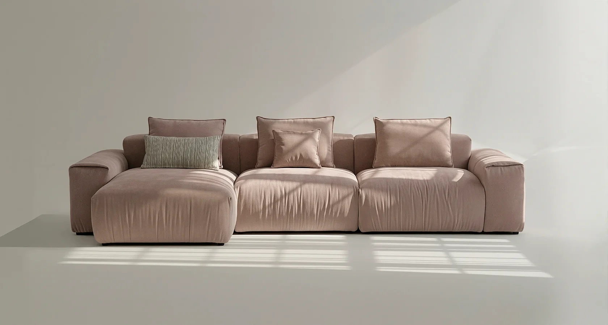

МЯГКАЯ МЕБЕЛЬ ПО ВАШИМ РАЗМЕРАМВаше место.
Ваше место.
Для отдыха.
Диваны, кровати и мягкая мебель по индивидуальным размерам. Подберём форму, обивку и детали для вашего интерьера.
Подобрать мебель
ФОРМА И ОБИВКАФорма, ткань
Форма, ткань
и ваше удобство.
От уютного кресла до кровати для спальни. Обсудим размеры, сочетания материалов и то, как мебель будет использоваться каждый день.
Обсудить мой вариант